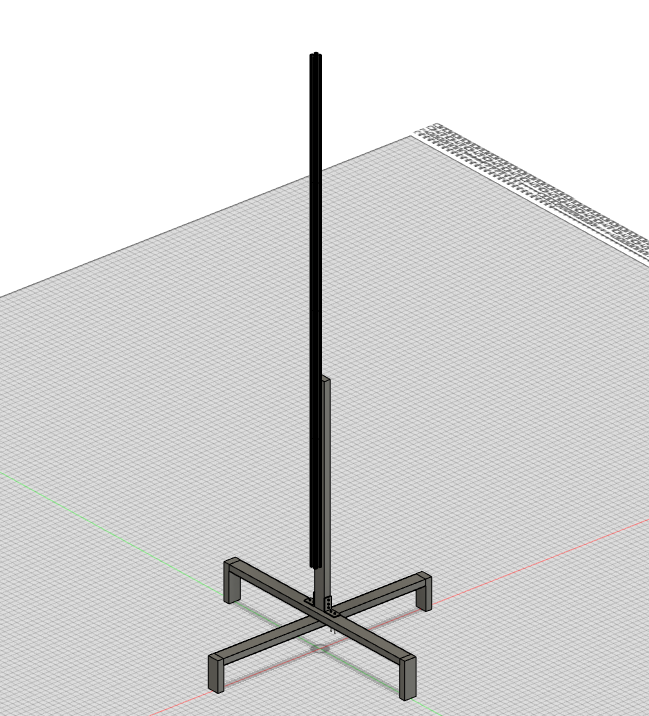
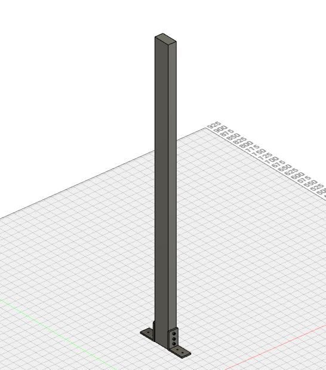
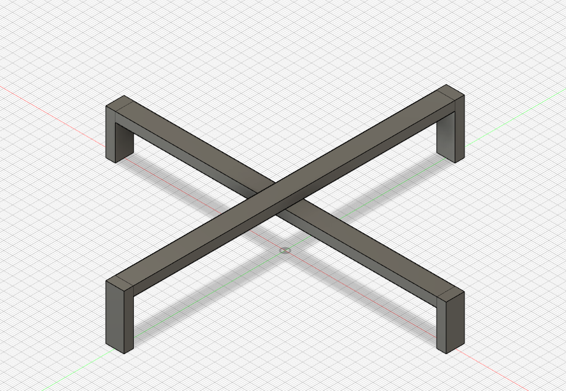

Launch Pad 1
This is Launch-Pad 1 (fig 1). It consists of three main parts: the base, strong back, and the launch rail. The launch rail is a 2-meter long aluminum extrusion in the 3030 profile. The rail is mounted on the strong back (fig 2), the strong back is made up of two 'L-clamps' and 2"x1" 90cm long rectangular aluminum piping. The aluminum piping rotates around the 3 screws on the 'L-clamp'. The base (fig 3) is made up of the same aluminum piping that the strong back uses. Two pipes are stacked on each other orthogonally and welded together. Two 10cm long rectangular tubes are welded to each tube to raise the base 10cm off the ground


